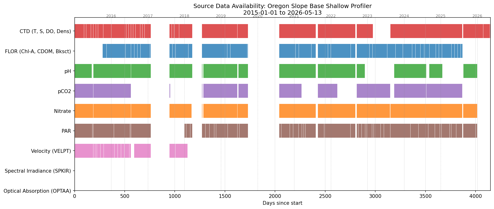

Developer Guide#
New here? Read the big picture in
ArgosyOverview.md. This guide is a technical map for a collaborator (“Chuck”) or a separate research program (“Angus”) ready to dive in to Argosy. Concerning the working environment and data access: ConsultSETUP.md.
This document describes the repository and data filesystem layout, and the end-to-end
workflow from data ordering (Phase 1) through analysis (Phase 2). For the exhaustive file
inventory see CodeManifest.md; for one-off operational commands (build/publish, per-file
PDF, standalone widgets) see the operational-recipes steering file.
Two-phase structure#
We want to distinguish between the process of getting and cleaning the data (Phase 1) from the analysis of that data (Phase 2).
Phase 1 — Pipeline: raw OOINET data → sharded
redux→ quality-controlled analysis-readypp06(and annotated derivatives). Workflow tasks 0–3 + 6 below. Docs: this guide,Sharding.md,PostProcessing.md,PP05_QCAnalysis.md,DataOps.md,VectorData.md.Phase 2 — Analysis: anomaly coincidence, residual climatology, spectral graph analysis, internal waves, Columbia plume, and cross-comparison with satellite (NASA PO.DAAC SST/SSS/ ocean color). Tasks 4–5. Docs:
Analysis.md,SpectralGraphAnalysis.md,InternalWaves.md,ColumbiaPlumePlan.md,TidalAnalysis.md,CoincidencePlans.md.
Argosy starts with the Oregon Slope Base (sb) shallow profiler; a near-term goal is bringing
Oregon Offshore (oo) and Axial Base (ab) to the same stage.
Filesystem layout#
We have a Jupyter Book (plus working code): A GitHub repo; and to keep the repo size manageable we have a separate data directory. That is: We work from two independent directory trees: the repository (~/argosy, code + markdown, GitHub) and the data (~/ooi, NetCDF + derived products, mirrored to S3). The data footprint in ~/argosy is light, for example ~/argosy/images/ holds copies of charts for the book/PDF.
To manage file paths we have a Python library ooipaths.py. All path knowledge is centralized in ooipaths.py found in the repo root. Other code uses this library to generate paths. For example op.redux_dir(year, site) will provide a path to a redux sub-folder given a site of interest and a year. <site> is a 2-letter code (sb/oo/ab) corresponding to the three OOI shallow profilers, respectively Oregon Slope Base, Oregon Offshore (Endurance), and Axial Base.
~/argosy/ repository (Jupyter Book + working scripts/markdown)
chapters/ Jupyter Book executable notebooks
ooipaths.py single source of truth for data paths
~/ooi/ data root
<site>/ sb (Slope Base), oo (Oregon Offshore), ab (Axial Base)
ooinet/ raw OOINET source NetCDF
scalar/<yyyy>_<instrument>/ e.g. sb/ooinet/scalar/2016_nitrate
vector/<yyyy>_<instrument>/ velocity, spectral irradiance, optical absorption, beam attenuation
redux/<yyyy>/ sharded profiles (one NetCDF per sensor per profile)
postproc/<pp>/<yyyy>/ post-processing results (pp01, pp02, pp05, pp06, ...)
profileIndices/ profile ascent/descent timestamps (clone from GitHub, designator-keyed CSVs)
metadata/ derived metadata, in subfolders (qc, profiles, features, annotations, external, cache, scans)
analysis/<method>/ analysis outputs (sga, clustering, ...)
visualizations/ saved charts (histograms, etc.)
Raw ooinet for sb is ~204 GB (archived to S3, deletable locally); redux ~18 GB; pp06
~15 GB. See DataOps.md for S3 layout, sync/restore, and local disk management.
Workflow (tasks 0–6)#
(0) Manual: order datasets through the OOINET browser interface (see below).
(1) Automated — Download: retrieve NetCDF from the OOINET staging URLs into
~/ooi/<site>/ooinet/{scalar|vector}/<yyyy>_<instrument>/. Code:chapters/DataDownload.ipynb. Includes a step to scan for and delete superfluous (time-overlapping) source files.(2) Automated — Sharding: break source files into single-sensor, single-profile shards in
~/ooi/<site>/redux/<yyyy>/. Code:chapters/DataSharding.ipynb. Also generates the midnight/noon profile lists. SeeSharding.md.(3) Automated — Post-processing: evaluate/filter shards into
~/ooi/<site>/postproc/pp<NN>/<yyyy>/. SeePostProcessing.mdandPP05_QCAnalysis.md.(4) Interactive — Visualizations: bundle charts, curtain plots, animations. See
Visualization.md.(5) Interactive — Analysis: SGA, clustering, coincidence, etc. See
Analysis.md(Phase 2).(6) Mirror to S3: reproducibility/portability. See
DataOps.md.
Task 0/1 detail — ordering and downloading from OOINET#
Order datasets from OOINET (manual)#
Log in to the OOI access page.
Left-hand filters: Array, Cable, Platform, Instrument.
In the Data Catalog box: use the + action to add datasets to the download table.
Do not use the time-window interface in the catalog.
Selections will appear in a Data Navigation table (top center of browser page)
Select datasets with Stream type ==
Science.Select the download button to raise an order dialog box
Use profileIndices to identify the start day of operations; for example Oregon Offshore started operation on 03-AUG-2015
Using checkboxes enable “Include Provenance” and “Include Annotations”
Click Download → finalize the order:
Type the time range manually, e.g.
2015-01-01 00:00:00.0.Optionally uncheck Download All Parameters and ctrl-click specific parameters.
Submit; an “order ready” email (with staging URLs) usually arrives in under ~2 hours.
Download the order#
URLs go into ~/argosy/download_link_list.txt (one per line; #-prefixed lines ignored).
DataDownload.ipynb reads each URL, reports how many .nc files are present / already
downloaded / remaining, and downloads the missing ones (restart-tolerant). Files route to the
destination folder by the year parsed from the filename’s first timestamp. .ncml files are
ignored.
Raw filename anatomy#
Example:
deployment0004_RS01SBPS-SF01A-2A-CTDPFA102-streamed-ctdpf_sbe43_sample_20180208T000000.840174-20180226T115959.391002.nc
deployment0004— operational deployment (months–year between maintenance)RS01SBPS— reference designator:RS=Regional Cabled Array,SB=Slope Base,PS=Profiler ShallowSF01A— the profiler (not the fixed platform)CTDPFA102— CTD instrument (yields temperature, salinity, density, dissolved oxygen shards)20180208T...-20180226T...— UTC data time range.nc— NetCDF
These source files are dense amalgams (sensor + engineering + QC data, hundreds of MB, many profile cycles). The pipeline reduces them to per-sensor per-profile shards.
Common xarray first step (raw dimension is obs; we swap to time):
ds = ds.swap_dims({'obs': 'time'})
Keep time, depth, and the science variable(s); drop lat/lon (near-constant for a
shallow profiler) and engineering variables not needed downstream.
Degenerate source files#
Because CTD files are delivered alongside other instrument orders, downloading pH/pCO2/nitrate
can pull duplicate CTD files. Cells 2–3 of DataDownload.ipynb detect source files whose time
range is covered by other file(s) and script their deletion (time ranges are in the filenames).
Source data coverage#
Presence/absence of source files by instrument across the timeline (generated by cell 5 of
DataDownload.ipynb):

S3 mirror (task 6, summary)#
The ~/ooi tree mirrors to s3://s3ooi/ (per-site prefixes; raw ooinet/ kept under legacy
keys). DataOps.md is authoritative for sync/verify/restore commands and the public-read
bucket policy. Quick form:
aws s3 sync ~/ooi/sb/redux/ s3://s3ooi/sb/redux/
aws s3 sync ~/ooi/sb/postproc/ s3://s3ooi/sb/postproc/
Where to go next#
Extend to a new site (
oo/ab): run tasks 0–3 withsite=set;ooipathshandles paths.Analysis methods:
Analysis.mdand the Phase 2 docs.Reuse / cite the work:
SETUP.md(get running) andPublishing.md(DOIs, data access).